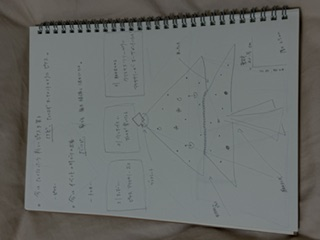
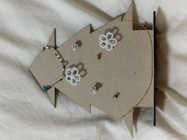

アクセサリーを飾るツリー
ピアスはなくしたら買うものではなく、このツリーを飾る唯一のオーナメント

自分が欲しいものを作るのではなく、自分が最近持っている悩みをもとに今回の案を思いつきました。
手頃のピアスをつけて、なくしたら新しいのを買うのではなく自分のアクセサリーを大切にできる置き場をイメージしました。

実際に作成してみて、3Dプリンターで培ったFusion360の力を活かして一発で材料のサイズを合わせて組み立てることができました。